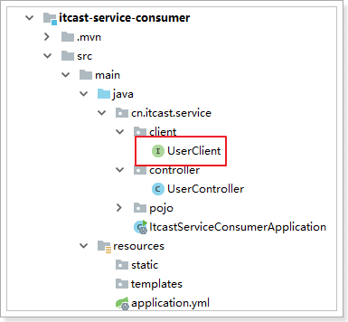
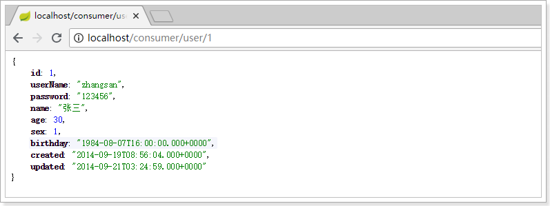
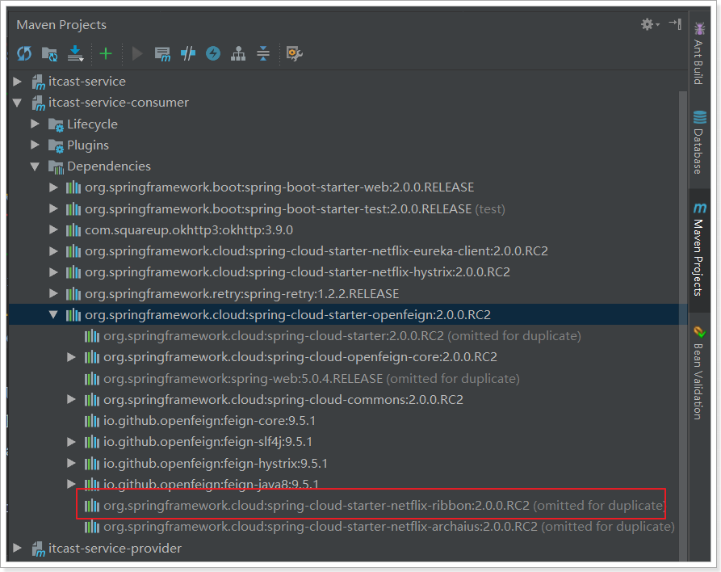
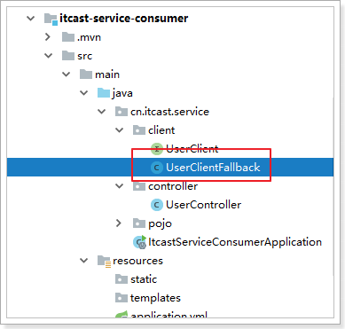
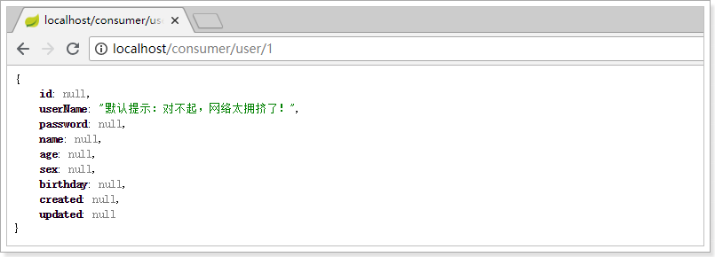
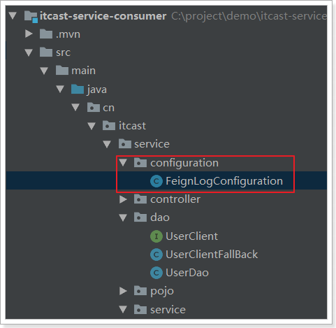
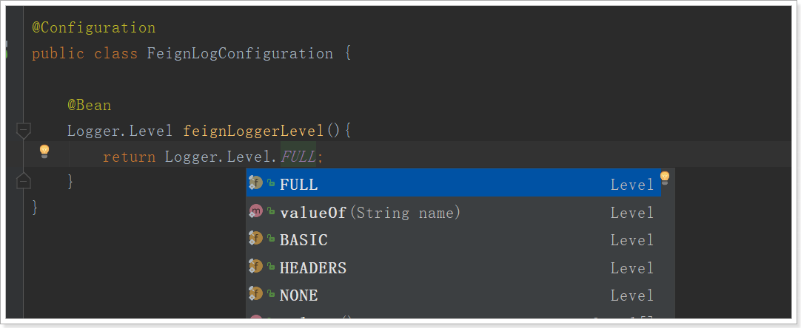
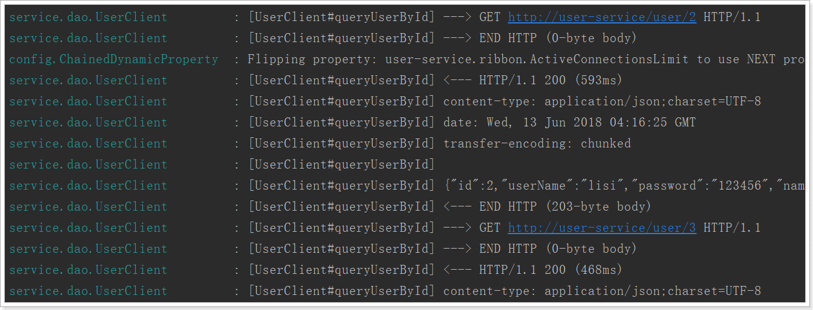

feign是更加精进的负载均衡，可以减缓spring的restTemplate，本文主要介绍，
- 基本使用
- 配置
- hystrix支持
- 请求压缩
- 日志级别
Feign
在前面的学习中，我们使用了Ribbon的负载均衡功能，大大简化了远程调用时的代码：
String user = this.restTemplate.getForObject("http://service-provider/user/" + id, String.class);如果就学到这里，你可能以后需要编写类似的大量重复代码，格式基本相同，无非参数不一样。有没有更优雅的方式，来对这些代码再次优化呢？
这就是我们接下来要学的Feign的功能了。
2.1.简介
有道词典的英文解释：

为什么叫伪装？
Feign可以把Rest的请求进行隐藏，伪装成类似SpringMVC的Controller一样。你不用再自己拼接url，拼接参数等等操作，一切都交给Feign去做。
项目主页：https://github.com/OpenFeign/feign

2.2.快速入门
改造itcast-service-consumer工程
2.2.1.导入依赖
<dependency>
<groupId>org.springframework.cloud</groupId>
<artifactId>spring-cloud-starter-openfeign</artifactId>
</dependency>2.2.2.开启Feign功能
我们在启动类上，添加注解，开启Feign功能
@SpringCloudApplication
@EnableFeignClients // 开启feign客户端
public class ItcastServiceConsumerApplication {
public static void main(String[] args) {
SpringApplication.run(ItcastServiceConsumerApplication.class, args);
}
}删除RestTemplate：feign已经自动集成了Ribbon负载均衡的RestTemplate。所以，此处不需要再注册RestTemplate。
2.2.3.Feign的客户端
在itcast-service-consumer工程中，添加UserClient接口：

内容：
@FeignClient(value = "service-provider") // 标注该类是一个feign接口
public interface UserClient {
@GetMapping("user/{id}")
User queryById(@PathVariable("id") Long id);
}- 首先这是一个接口，Feign会通过动态代理，帮我们生成实现类。这点跟mybatis的mapper很像
@FeignClient，声明这是一个Feign客户端，类似@Mapper注解。同时通过value属性指定服务名称- 接口中的定义方法，完全采用SpringMVC的注解，Feign会根据注解帮我们生成URL，并访问获取结果
改造原来的调用逻辑，调用UserClient接口：
@Controller
@RequestMapping("consumer/user")
public class UserController {
@Autowired
private UserClient userClient;
@GetMapping
@ResponseBody
public User queryUserById(@RequestParam("id") Long id){
User user = this.userClient.queryUserById(id);
return user;
}
}2.2.4.启动测试
访问接口：

正常获取到了结果。
2.3.负载均衡
Feign中本身已经集成了Ribbon依赖和自动配置：

因此我们不需要额外引入依赖，也不需要再注册RestTemplate对象。
2.4.Hystrix支持
Feign默认也有对Hystrix的集成：

只不过，默认情况下是关闭的。我们需要通过下面的参数来开启：(在itcast-service-consumer工程添加配置内容)
feign:
hystrix:
enabled: true # 开启Feign的熔断功能但是，Feign中的Fallback配置不像hystrix中那样简单了。
1）首先，我们要定义一个类UserClientFallback，实现刚才编写的UserClient，作为fallback的处理类

@Component
public class UserClientFallback implements UserClient {
@Override
public User queryById(Long id) {
User user = new User();
user.setUserName("服务器繁忙，请稍后再试！");
return user;
}
}2）然后在UserFeignClient中，指定刚才编写的实现类
@FeignClient(value = "service-provider", fallback = UserClientFallback.class) // 标注该类是一个feign接口
public interface UserClient {
@GetMapping("user/{id}")
User queryUserById(@PathVariable("id") Long id);
}3）重启测试：

2.5.请求压缩(了解)
Spring Cloud Feign 支持对请求和响应进行GZIP压缩，以减少通信过程中的性能损耗。通过下面的参数即可开启请求与响应的压缩功能：
feign:
compression:
request:
enabled: true # 开启请求压缩
response:
enabled: true # 开启响应压缩同时，我们也可以对请求的数据类型，以及触发压缩的大小下限进行设置：
feign:
compression:
request:
enabled: true # 开启请求压缩
mime-types: text/html,application/xml,application/json # 设置压缩的数据类型
min-request-size: 2048 # 设置触发压缩的大小下限注：上面的数据类型、压缩大小下限均为默认值。
2.6.日志级别(了解)
前面讲过，通过logging.level.xx=debug来设置日志级别。然而这个对Fegin客户端而言不会产生效果。因为@FeignClient注解修改的客户端在被代理时，都会创建一个新的Fegin.Logger实例。我们需要额外指定这个日志的级别才可以。
1）设置com.leyou包下的日志级别都为debug
logging:
level:
cn.itcast: debug2）编写配置类，定义日志级别

内容：
@Configuration
public class FeignLogConfiguration {
@Bean
Logger.Level feignLoggerLevel(){
return Logger.Level.FULL;
}
}这里指定的Level级别是FULL，Feign支持4种级别：

- NONE：不记录任何日志信息，这是默认值。
- BASIC：仅记录请求的方法，URL以及响应状态码和执行时间
- HEADERS：在BASIC的基础上，额外记录了请求和响应的头信息
- FULL：记录所有请求和响应的明细，包括头信息、请求体、元数据。
3）在FeignClient中指定配置类：
@FeignClient(value = "service-privider", fallback = UserFeignClientFallback.class, configuration = FeignConfig.class)
public interface UserFeignClient {
@GetMapping("/user/{id}")
User queryUserById(@PathVariable("id") Long id);
}4）重启项目，即可看到每次访问的日志：
